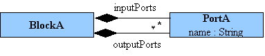
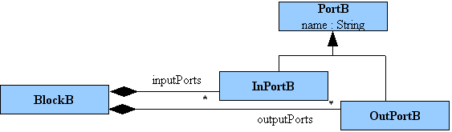

Introduction
This use case deals with situations where the source element meta type could not be simply matched with the target meta type. The only way to resolve the target meta type is to browse source model.
The Metamodels

Metamodel A
The metamodel A describes a block/port structure where a block can have several input and/or output ports. The port type direction is distinguished via its container relation's name: inputPorts or outputPorts. Both input and output ports are represented via the PortA concept.

Metamodel B
The metamodel B describes the same basic concepts but differentiates input and output ports via two new concepts: InPortB and OutPortB.
Transformation principles
These transformation principles are pretty straightforward as both metamodels strictly represent the same block/port concept.
For a BlockA, we create a BlockB and:
- for each input port of aBlock.inputPorts, we create an InPortB.
- for each output port of aBlock.outputPorts, we create an OutPortB.
A first implementation
A first idea to transform A to B could be to use the distinct clause as shown in the following piece of code (each element is "manually" transformed by iterating on each source port element):
|
Even if the distinct-foreach is not an imperative instruction. It could be considered as a bad practice when it is a translation of imperative algorithms.
How to follow the ATL philosophy
In ATL, developers should avoid bad habits of imperative programming i.e. explicit creation of elements. They should focus on the What and not the How.
What kind of rule(s) do we have to write? The common way to replace distinct-foreach instruction is to use lazy rules instead. So the previous code could be updated as follow:
|
Lazy rules should be used when it is not possible to directly match an element from the source model. In our case, an input port is created from an input port and an output is created from an output port. It clearly appears that a simple solution is possible by using only automatic traceability links (i.e. we can avoid to explicitly call matched rules dealing with Port as done in the previous code with lazy rules).
|
The matched rule PortA2OutPortB has a guard filtering only output ports and the matched rule PortA2InPortB has a guard filtering only input ports from the input model.
When this transformation will be applied on big models, evaluation of the guard could be time-consuming. Some optimizations in each guard could be done by using refImmediateComposite() operation. refImmediateComposite() is a reflective operation that returns the immediate composite (e.g. the immediate container).
|
Conclusion
What we have learnt with this example:
- using matched rules.
- using lazy (matched) rules.
- avoiding some imperative constructs.
- making a first code optimization.
Download

|
Port |
Source code for the scenario Port. |